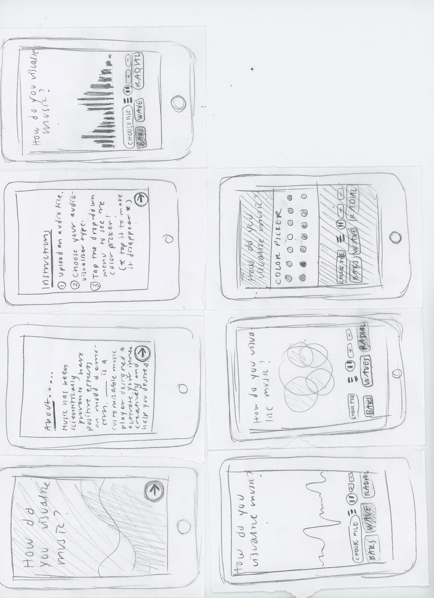

Paper Prototypes
Description
From this exercise, I learned the importance of making navigating the different choices on my application clearer/easy to understand. From the feedback I received, I was able to deduce that the drop down menu was a little difficult for people to notice and understand. However, because I plan to make this a mobile application, it is impossible to fit all the colors I want to use in the viewport, without making the interface look cluttered with all the other buttons/audio controls. Therefore, I made relabeled my page with instructions (previously named 'About') with 'Instructions' and clearly numbered my steps. When actually creating the interface, I also plan to use multiple colors for the bars for my drop-down menu so that it is more noticeable and also helps users immediately recognize that the menu is associated with color.
